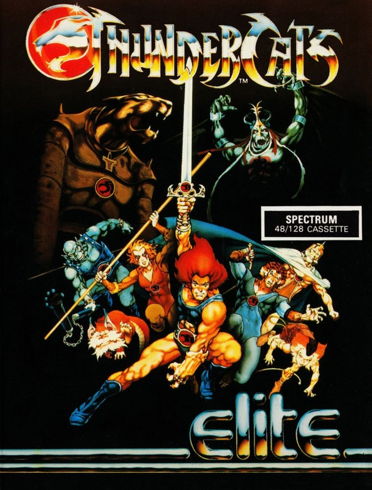
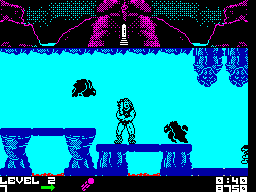
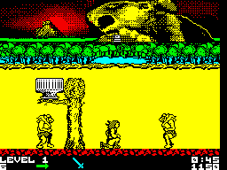
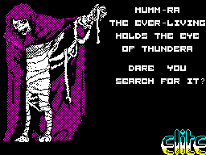

Thundercats


{kind=link}

| Publisher: | Elite |
| Price: | £7.95 |
| Year: | 1987 |
| Source: | CRASH, Issue 46 |

Mumm-Ra holds the Eye of Thundera. Thundercat must search for it... and take it. But the warrior’s quest is not to be easy, despite his six lives, for Mumm-Ra’s burly thugs and dirty dwarfs and flapping bats and ugly hags are lined up against this hunk of he-man. And their every touch is lethal.

Undeterred by such astronomic odds, Thundercats runs onwards through underground hallways, along stone walkways and across open plains; he leaps upward over streams and ducks downward beneath the touch of hideous things.
Thundercat begins this TV licence with just a sword, which he must wield with increasing dexterity as Mumm-Ra’s cohorts attack from all sides. But as our hero progresses he can take advantage of containers and items that conceal additional features. By destroying these with his weapon and then collecting what is revealed, Thundercat can add to his lives or obtain a different weapon, such as an energy-orb blaster.
A time limit is set for the completion of each level; if Thundercat successfully reaches the level’s end, he is rewarded with a time bonus and a kill bonus, which depends on the number of foul fiends he has sent to meet their satanic maker.
At later levels, Thundercat can choose which perilous pathway he takes through the elements of earth, fire, air and water, and act as saviour to those who have been captured and held by the wickedness of Mumm-Ra.
CRITICISM

graphics’ with perfect scrolling colour
“There’s the hallmark of Gargoyle’s programming in Thundercats — most notably in the large, detailed and very well-animated graphics. It’s one of those games which you’ll think if just too hard when you first play it, but after a bit of practice there shouldn’t be much difficulty getting through at least three levels. The action is fast, and you’ll need quick reactions. Thundercats is probably the best thing Elite has produced since Ghosts ’N’ Goblins.”
RICKY ... 91%
“I can’t say I’ve heard of these Thundercats chappies (although apparently they’re pretty popular) — I must be a bit too old — so I can’t really comment on the tie-in side of Thundercats. But on its own merits it succeeds admirably. The graphics can’t be faulted: the screen is extremely colourful and the animation topnotch. The imposing enemies change from level to level so you never know what to expect, which makes you have just one more go... great stuff! I bet the TV series ain’t as good as the game.”
PAUL ... 91%

vanquish Mumm-Ra’s evil
“Wow! Thundercats is brilliant. The logo is very neatly drawn, and the in-game graphics match it; they’re excellent in every respect. Considering that the programmers had to move the colour as well as the pixels, the scrolling is very smooth. At first, despite Thundercats’s playability, I didn’t think it’d last The Treatment and still be addictive, but two days later they had to prise me away from my Spectrum with a crowbar to make me write this comment! It’s got weeks and weeks of playability just waiting to be used. And me, I’m still trying to finish the bonus screen after Level Two!”
MIKE ... 92%
COMMENTS
| Joysticks: | Cursor, Kempston, Sinclair |
| Graphics: | Very detailed and beautifully-animated, with some neat digitised graphics |
| Sound: | Exhilarating tune and FX on 128K version — otherwise limited |
| Options: | Definable keys |
| General rating: | A good-looking and exciting game that deserves to succeed |
| Presentation: | 92% |
| Graphics: | 90% |
| Playability: | 90% |
| Addictive qualities: | 92% |
| Overall: | 91% |